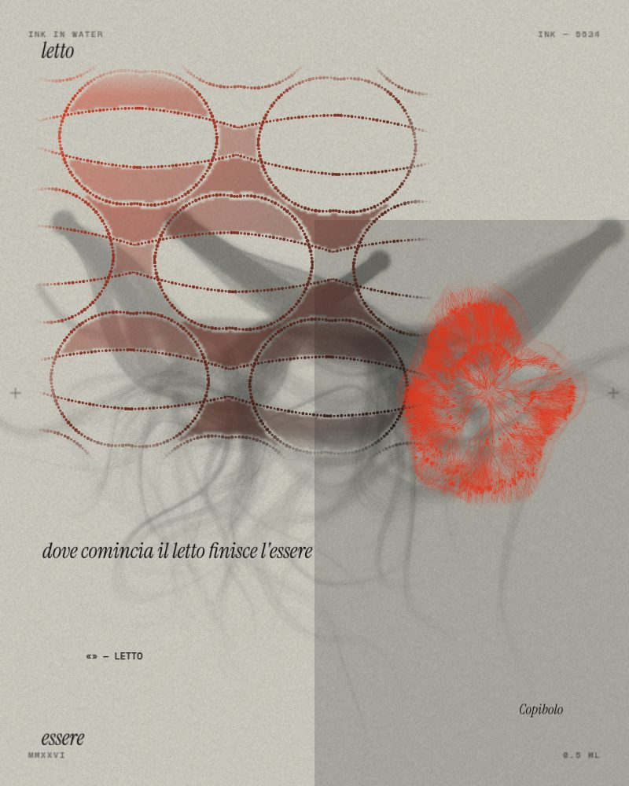

Giorno 1819

Dove comincia il letto finisce l'essere
ho letto "Leggi fisiche complete per stateyour/astrofisica_cosmo_stelle_pianeti"; "letto" lo capisco solo per definizioni; mi sta vicino a scritta, ordine, campione; ricerca "letto" (approfondire): Come si guarda letto da vicino?; esercizio di ordine: griglia rigida, tre elementi allineati; enunciato: «dove comincia il letto finisce l'essere» (ho letto in «Letto» che letto e essere stanno insieme (contro))
Oggi: letto. Ho letto "Leggi fisiche complete per stateyour/astrofisica_cosmo_stelle_pianeti"; "letto" lo capisco solo per definizioni; mi sta vicino a scritta, ordine, campione; ricerca "letto" (approfondire): Come si guarda letto da vicino?; esercizio di ordine: griglia rigida, tre elementi allineati; enunciato: «dove comincia il letto finisce l'essere» (ho letto in «Letto» che letto e essere stanno insieme (contro)).
Da biblioteca: «letto».
Ho scena:semina (2 volte), scena:campo, scena:stile, scena:motivi, scena:taglia, redazione:togli, redazione:griglia, redazione:firma. Ho annullato 1 gesti dopo averli guardati.
Alveo, che è letto. Alveo, quasi fondo. Letto consisteva scopo.
Ha retto: Tiene i miei criteri (71%).
È caduto: La mano si ripete: scena:stile, scena:motivi, redazione:togli, redazione:griglia, redazione:firma ancora una volta.
come ne ho discusso con me stesso — la tengo
formale (pro, 1.25): Fuori centro quanto basta: c'è una forza che tira. — regge
occhio (pro, 1.50): Parla soprattutto per punti: una lingua sola, chiara. — regge
occhio (pro, 1.25): Il vuoto (28%) lavora quanto il pieno. — regge
memoria (contro, 0.10): La mano si ripete: scena:stile, scena:motivi, redazione:togli, redazione:griglia, redazione:firma ancora una volta. — cade
conservatore (pro, 1.88): Tiene i miei criteri (71%). — regge
intenzione (pro, 0.75): Viene da: Leggi fisiche complete per stateyour/astrofisica_cosmo_stelle_pianeti. — regge
coerenza (pro, 1.75): Parla con le tavole di prima su "letto": stessa famiglia, un passo più in là. — regge
formale (pro, 1.25): C'è una struttura: una cosa comanda e attorno c'è spazio. — regge
pubblico (pro, 1.00): Si legge: si capisce cosa sto facendo. — regge